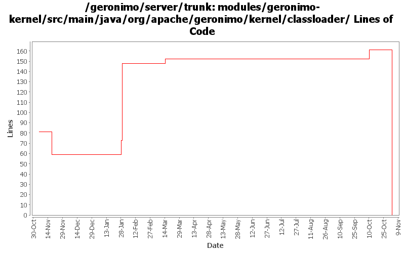

[root]/modules/geronimo-kernel/src/main/java/org/apache/geronimo/kernel/classloader

| Author | Changes | Lines of Code | Lines per Change |
|---|---|---|---|
| Totals | 59 (100.0%) | 179 (100.0%) | 3.0 |
| dims | 3 (5.1%) | 123 (68.7%) | 41.0 |
| djencks | 5 (8.5%) | 40 (22.3%) | 8.0 |
| pmcmahan | 1 (1.7%) | 10 (5.6%) | 10.0 |
| kevan | 32 (54.2%) | 6 (3.4%) | 0.1 |
| vamsic007 | 1 (1.7%) | 0 (0.0%) | 0.0 |
| prasad | 17 (28.8%) | 0 (0.0%) | 0.0 |
GERONIMO-3565. Modules distributed amongst framework/modules and plugins
0 lines of code changed in 17 files:
log an exception instead of bailing out when geronimo's special
classloader for windows can't cache a jar file embedded in a car.
reenable plugins subproject now that it builds ok on windows.
10 lines of code changed in 1 file:
Fix EJB deployment errors. The ClassLoader used during OpenEJB annotation processing did not include any application dependencies. So, NoClassDefErrors could occur during deployment. Seems to be fixed with these changes
0 lines of code changed in 1 file:
GERONIMO-2693 eliminate most duplicate entries from getResources. This should also produce only normailized urls. This should make jetty start quickly
40 lines of code changed in 3 files:
finally got irriated enough to add this hack to get the server to start-up/work even when JarFile fails due to long file path problem. hack kicks in only if JarFile throws a ZipException, so there should be no performance hit
108 lines of code changed in 2 files:
i keep forgetting that javax.servlet.UnavailableException is actually caused by failure to load jars when the path is long. So, added a log to tell the user that we are not able to load the jars
15 lines of code changed in 1 file:
Source cleanup: removed unnecessary import statements.
0 lines of code changed in 1 file:
GERONIMO-2537 Update the src headers in server/trunk/modules to be compliant with the new ASF src header and copyright policy (http://www.apache.org/legal/src-headers.html). I also did some cleanup of the src headers and tried to make them all a consistent format
6 lines of code changed in 31 files:
GERONIMO-2460 Provide way to copy our classloaders for use as jpa temporary classloaders
0 lines of code changed in 2 files: